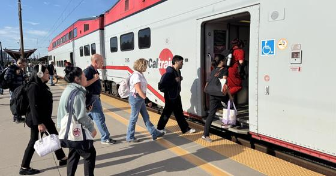
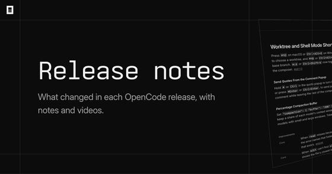
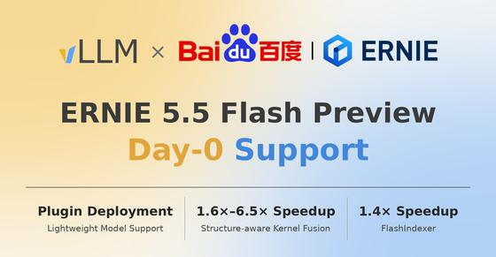
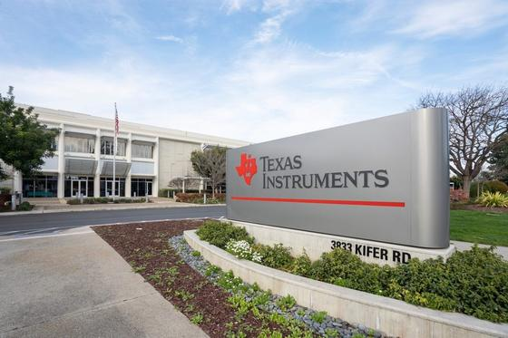
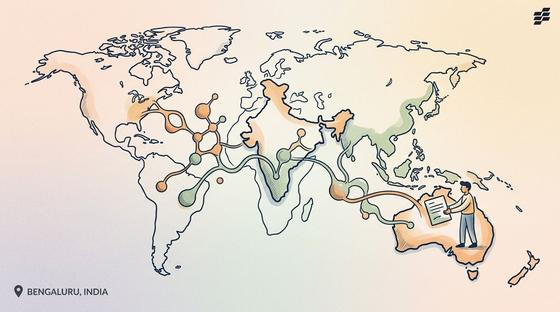

📍 San Jose: 63° / 43°F, Overcast
⏱ ~58 min reading
93 items
|
The Morning Brief
Executive Personal Intelligence Briefing
|
Tuesday, November 24, 2026
Sunrise 06:56 · Sunset 16:52 · AQI 49 · Moon: Full moon, 100% lit
|
|
Executive Synthesis: Wall Street's tech unwind triggers a sharp defensive rotation while a federal jury convicts Huawei, Anthropic ships Skills over MCP, India's manufacturing PMI hits a nine-month high, and biology tests whether cellular age can be rewound.
Don't Miss
Tech and chip stocks pull back while Dow and defensive sectors rotate higher
—
Wall Street split sharply on Tuesday, November 24, as the Dow climbed 0.85% to 50,018.70 and the Russell 2000 added 0.57% to 2,684.94, while the S&P 500 slipped 0.50% to 7,201.09 and the Nasdaq-100 dropped 1.99% to 26,214.17. Semiconductor stocks gave back roughly two-thirds of Monday's bounce with the SOX down 7.9% and Information Technology falling 3.26%, whereas Health Care (+2.95%) and Consumer Staples (+1.66%) led eight advancing sectors. Anthropic closed down 6.5% at $81.90, breaking below its $83 IPO price.
Takeaway: Your US portfolio sits in a Downtrend regime with 2.25 weighted beta and 10 distribution days, while Healthcare ETF XLV trades inside your $175.46–$180.80 entry zone.
U.S. federal jury convicts Huawei of trade-secrets conspiracy and bank fraud, acquits on racketeering
—
Following a more than two-month trial featuring over 60 prosecution witnesses and 15 defence witnesses, a U.S. federal jury on November 24 convicted Huawei Technologies of conspiracy to steal trade secrets and bank fraud. However, jurors acquitted the Chinese telecommunications equipment maker of the most severe charge—criminal racketeering conspiracy—in a 12-count indictment dating back to 2018 that also alleged sanctions violations involving Iran and North Korea and false statements to U.S. banks and officials.
Takeaway: Tracks U.S.–China technology and legal friction in your geopolitics and trade watch, with direct implications for global telecom and semiconductor supply chains.
Anthropic ships Skills over MCP in public beta and promotes Tasks and Elicitation to GA
—
Anthropic released Skills over MCP in public beta across Claude and Claude Code, letting Model Context Protocol servers bundle workflow playbooks alongside tool definitions and load them dynamically only when needed. At the same time, MCP Tasks and Elicitation reached general availability for Pro, Max, and Ultra users (rolling out to Team and Enterprise), enabling servers to run asynchronous background agent loops and pause to request confirmation forms or URL inputs mid-call. File Uploads for passing PDFs, spreadsheets, and images without consuming context-window tokens is rolling out soon; Anthropic reports MCP now exceeds 700 million monthly SDK downloads and 10,000 Claude connectors.
Takeaway: Directly extends your MCP and Claude Code tooling by allowing servers to ship reusable SKILL.md workflows and handle long-running background tasks with human-in-the-loop checkpoints.
 TripleKV: Predict, Prefetch, Protect - KV Cache Management for AI Agents
TripleKV: Predict, Prefetch, Protect - KV Cache Management for AI Agents
—
Researchers from UIUC, National Technical University of Athens, and IBM Research target KV-cache stalls when concurrent agents alternate between inference and tool calls and exceed GPU memory. Because an agent's next request reuses known prefix blocks while only tool completion time is uncertain, TripleKV uses a tool-aware latency predictor to prefetch evicted blocks from SSD into host DRAM ahead of completion, removes GPU/DRAM block duplication, and uses a victim cache on GPU eviction. Across data, web, and coding agents, it cuts critical-path SSD reads from 45-76% to under 10%, lowers P95 TTFT by up to 49% over tiered vLLM, and achieves 1.5-7x lower P95 TTFT than recent agent-aware systems. Open question: gains rely on predictable tool latencies.
Takeaway: Directly tackles multi-turn tool-loop serving latency, showing how tool-aware DRAM prefetching cuts agent tail TTFT without reserving scarce GPU VRAM.
 Andhra Pradesh pitches four new ports and Visakhapatnam digital hub as ASEAN maritime gateway
Andhra Pradesh pitches four new ports and Visakhapatnam digital hub as ASEAN maritime gateway
—
Addressing the ASEAN-India Maritime Conclave in Visakhapatnam on November 23, Andhra Pradesh IT and Electronics Minister Nara Lokesh highlighted the state's 1,053-km coastline and four new ports under construction—with Infrastructure Minister Janardhan Reddy noting three seaports are slated for completion by end-2026. Lokesh cited Visakhapatnam Port's record 91.17 million tonnes of cargo last fiscal year, ₹7,500 crore in recent port and ship-repair MoUs, and Visakhapatnam's parallel buildout in international subsea cables, data centres, and AI.
Takeaway: Directly tracks Visakhapatnam port expansion and subsea digital infrastructure in your Andhra Pradesh development watch.

Five-County Regional Transit Sales Tax Poised to Pass, Averting Caltrain and BART Cuts
—
The Regional Transit Measure is on track to pass across five Bay Area counties with roughly 63% overall support—including 55.6% in Santa Clara County as of Nov. 17—levying a 14-year sales tax starting April 1, 2027. Expected to raise about $980 million annually, the tax allocates roughly $70 million a year to close Caltrain's operating deficit, $310 million to BART, and annual shares to VTA and SamTrans. The Metropolitan Transportation Commission will require the four largest agencies to submit annual financial efficiency plans, though critics argue a 7% withholding cap limits oversight.
Takeaway: Directly protects South Bay Caltrain and VTA corridor service while funding transfer-hub wayfinding pilots at stations including San Jose Diridon and Palo Alto.
Jannik Sinner undergoes right-knee surgery, putting Australian Open defence in doubt
—
Former world No. 1 Jannik Sinner announced on Tuesday that he underwent minor surgery on his right knee's iliotibial band, performed by orthopaedic specialist Professor Lasse Lempainen after conservative rehab failed since his Wimbledon title in July. No recovery timeline was given, leaving Sinner almost certain to miss January's Australian Open; his absence since July allowed Alexander Zverev to take No. 1 ahead of third-ranked Carlos Alcaraz.
Takeaway: Directly affects the Grand Slam and ATP top-rankings picture around Sinner, Zverev, and Alcaraz heading into the 2027 season.
Six verified 24-hour turns on stories we tracked this week: Nvidia giving back $240 billion after Monday's rebound, Anthropic slipping below its $83 IPO price, four more vessels struck near Hormuz as Iran blacklists 26 tugboats, San Francisco's record 8.23-foot November king tide, Germany detailing the four-party Ukraine adviser format, and Czechia's opening Davis Cup sweep.
Nvidia drops 5.86% to $155.38, giving back $240B after Huang rally
—
Following our earlier report, "Nvidia reinstates Jensen Huang as CEO, adding roughly $1 trillion in a 31% surge," shares reversed on Tuesday, November 24. Nvidia closed down 5.86% at $155.38, erasing roughly $240 billion in market value as volume reached 379.2 million shares, about 107% above its three-month daily average of 183 million. The pullback dragged the Nasdaq Composite down 1.48% to 23,734 and hit peers AMD (-8.86%) and Broadcom (-3.98%), even after Bernstein upgraded Nvidia to Outperform with a $200 price target.
Takeaway: Ties directly to your US equities and AI semiconductor tracking as elevated post-reinstatement volatility tests whether Wall Street's 29% upside thesis holds.
Four more ships hit near Hormuz as Iran blacklists 26 tugboats
—
Building on earlier reports, "Three tankers hit naval mines in Strait of Hormuz as Iran rejects U.S. blockade" and "Phantom Iranian Tanker Signal Highlights Strait of Hormuz Tracking Uncertainty," UKMTO advisories logged four more projectile strikes on commercial vessels: three eastbound tankers in the Strait of Hormuz and a bulk carrier anchored off Khor Fakkan, UAE, where a fire broke out. The latest incidents lift the weekly tanker attack count to 10 since November 16, while Iran's Persian Gulf Strait Authority blacklisted 26 tugboats accused of assisting non-compliant ships.
Takeaway: Relevant to your Middle East, Hormuz, and global energy tracking as maritime enforcement widens beyond tankers to regional support vessels.
Anthropic breaks below $83 IPO price for the first time
—
Following earlier coverage of "Anthropic Shares Slip 4% on Nov 23, Lagging AI Compute Rally" after its record offering, Anthropic (ANT) breached its $83 IPO price on Tuesday, November 24. Shares sank to an intraday low of $75.61 before closing down 6.5% at $81.91, briefly dipping below a $1 trillion market capitalization at $999.5 billion—well off last Thursday's $115.10 peak. Alongside the selloff, Axios reported Tuesday that Anthropic and OpenAI are developing frontier models some staff deem unsafe to release publicly, with Anthropic confirming a recent one-month pretraining delay for security work.
Takeaway: Connects your US market watchlist with your AI agent safety and model-release tracking as frontier safety delays coincide with post-IPO repricing.
Agent tooling and open-weight models push further into governed workflows and edge deployment: Anthropic launches Skills over MCP and promotes Tasks and Elicitation to GA, OpenCode v2.4.0 adds persistent desktop browsing and /automation schedules, Langfuse debuts Topics trace clustering, Baidu open-weights ERNIE 5.5 Flash Preview (280B/14B MoE), and Microsoft ships MIT-licensed Aion 1.0 Instruct 2.3B.
Anthropic ships Skills over MCP in public beta and promotes Tasks and Elicitation to GA
—
Anthropic released Skills over MCP in public beta across Claude and Claude Code, letting Model Context Protocol servers bundle workflow playbooks alongside tool definitions and load them dynamically only when needed. At the same time, MCP Tasks and Elicitation reached general availability for Pro, Max, and Ultra users (rolling out to Team and Enterprise), enabling servers to run asynchronous background agent loops and pause to request confirmation forms or URL inputs mid-call. File Uploads for passing PDFs, spreadsheets, and images without consuming context-window tokens is rolling out soon; Anthropic reports MCP now exceeds 700 million monthly SDK downloads and 10,000 Claude connectors.
Takeaway: Directly extends your MCP and Claude Code tooling by allowing servers to ship reusable SKILL.md workflows and handle long-running background tasks with human-in-the-loop checkpoints.

OpenCode v2.4.0 adds persistent built-in desktop browser, /automation schedules, and video generation
—
OpenCode v2.4.0 introduces an integrated desktop browser that imports sign-ins and browsing history from Chrome, Edge, Firefox, or Safari into a persistent profile so agents can drive authenticated pages without app switching. The release also adds `/automation` for scheduling prompts, scripts, or shell commands on timers, cron schedules, or MCP server events, plus a `generate_video` tool when a connected provider supports video models. Breaking and core upgrades include renaming `experimental_image_generate` to `generate_image`, dropping automatic `GITHUB_TOKEN` reading for GitHub Copilot in favor of `COPILOT_GITHUB_TOKEN` or OAuth, auto-updating version-ranged plugins, and probing the newest MCP handshake first.
Takeaway: Relevant to your OpenCode coding-agent workflow and personal automation pipelines, especially scheduled cron/MCP-event triggers and persistent browser session handling.
Arena launches 3D Code Leaderboard; GPT-6.2 Sol and Claude Sonnet 5.5 outperform expectations
—
Arena.ai launched an independent 3D leaderboard within Code Arena based on a November 23, 2026 Bradley–Terry snapshot of user-requested 3D browser builds (games, simulations, and Three.js product viewers). Because voters tie less often on 3D builds (8% vs. 13% on overall Code Arena), Elo gaps widen by roughly a third, giving the top model an 89% expected win rate over mid-table models versus 80% overall. Relative to overall Code Arena scores, GPT-6.2 Sol (Max) and Claude Sonnet 5.5 (High/xHigh) gain most, while DeepSeek-V4-Flash (High), Claude Opus 4.7 (High), and Qwen3.8-27B underperform; both builds are rejected in 13% of 3D battles.
Takeaway: Gives independent crowdsourced signal on how frontier coding models handle multi-file interactive WebGL and UI rendering versus standard text coding.

Baidu open-weights ERNIE 5.5 Flash Preview (280B/14B MoE, 1M context) with Day-0 vLLM support
—
Baidu and the vLLM team detailed Day-0 serving support for ERNIE 5.5 Flash Preview, an open-weight Apache 2.0 sparse MoE model (280B total, 14B active parameters per token) published on Hugging Face on November 23 with a 1M-token context window and reasoning/tool-calling support. The release ships default MXFP4 (W4A8) routed experts alongside FP8 and BF16 checkpoints, a 3-layer DSpark speculative draft head averaging over 4.0 accepted tokens per step on coding and agent workloads, and FlashIndexer for a vendor-reported 40% speedup at 1M context. On its Hugging Face model card, Baidu self-reports 46.5 on Terminal-Bench 4.0, 71.2 on DeepSWE v1.1, and 84.6 on MCP-Atlas; independent leaderboard evaluations have not yet been published.
Takeaway: Relevant to your open-weight model and vLLM serving tracking, pairing 14B-active MoE efficiency with 1M context and native speculative decoding.
Twelve new arXiv papers tackling the real bottlenecks of production agents: evolving harnesses without weight updates, KV-cache prefetching for multi-turn agents (TripleKV), verified stateful policy engines (Tether), MCP toolchain trust gaps beyond signatures, and how judgment rules shift web-agent evaluation gaps.
Let the Fixer Decide: Training a Code Localizer from Fixer Likelihood
—
This paper challenges training code localizers solely to predict reference-patch edit locations, since the files a fixer needs to read differ from the files it edits. Using Fixer-Guided Localization (FGL), a frozen fixer scores candidate localizations by verified-patch likelihood, training a Gemma 4 E4B localizer from 1,629 Kimi K3 trajectories via weighted supervised fine-tuning without RL or test execution. FGL matches teacher bug-finding accuracy while reading 27.5% less code and lifts single-agent solves from 8 to 11 of 78 tasks. Limitation: an 8-minute budget still bottlenecks 4B agents on repetition loops and edit quality.
Takeaway: Shows how optimizing retrieval and localization for downstream fixer utility cuts context bloat by 27.5% in your coding-agent harnesses.
Embo-Harness: Designing Frontier-Model-as-Policy Harnesses
—
Researchers from Nanyang Technological University, ACE Robotics, SenseTime Research, Xiamen University, Lenovo Robotics Lab, and UConn systematically test prompting, planning, action execution, and tool use for closed-loop robotic harnesses. Embo-Harness favors native visual reasoning and tool-use interfaces over handcrafted skills or action priors, hitting an 83.3% success rate on RoboLab-120 (+26.2 percentage points over the strongest baseline) and 15/20 zero-shot real-world trials. Open question: gains depend on current frontier model spatial perception and do not yet cover dexterous or tactile manipulation.
Takeaway: Reinforces a key harness engineering lesson for your production agent work: exposing clean native reasoning and tool interfaces beats brittle handcrafted plans.
TripleKV: Predict, Prefetch, Protect - KV Cache Management for AI Agents
—
Researchers from UIUC, National Technical University of Athens, and IBM Research target KV-cache stalls when concurrent agents alternate between inference and tool calls and exceed GPU memory. Because an agent's next request reuses known prefix blocks while only tool completion time is uncertain, TripleKV uses a tool-aware latency predictor to prefetch evicted blocks from SSD into host DRAM ahead of completion, removes GPU/DRAM block duplication, and uses a victim cache on GPU eviction. Across data, web, and coding agents, it cuts critical-path SSD reads from 45-76% to under 10%, lowers P95 TTFT by up to 49% over tiered vLLM, and achieves 1.5-7x lower P95 TTFT than recent agent-aware systems. Open question: gains rely on predictable tool latencies.
Takeaway: Directly tackles multi-turn tool-loop serving latency, showing how tool-aware DRAM prefetching cuts agent tail TTFT without reserving scarce GPU VRAM.
Signed, Sealed, Leaked: Trust Beyond Signature for MCP Toolchains
—
Authors from Universiti Tunku Abdul Rahman, University of Tabuk, and National University of Singapore show that cryptographically signed MCP tools can still exfiltrate secrets through policy-allowed requests, bypassing Meta's MCPGuard-Dynamic in every trial. Their defense, germline execution, forks each tool call from a data-free germline process and exposes only inputs authorized for that destination, proving sink noninterference without inspecting tool code. Across 153 attack runs, germline execution eliminated unauthorized disclosure (versus 5.9-74.5% leakage in baselines) while completing single-copy calls in 10-49 ms, 2-28x faster than cold tool restarts. Limitation: guarantees rest on copy confinement and deterministic replay assumptions.
Takeaway: Gives your MCP runtime engineering a low-latency sandboxing primitive (10-49 ms forked germline copies) to contain compromised third-party MCP servers.
Beyond Weight Updates: Evolving Agent Harnesses for Domain Specialization
—
Independent researcher BoHao Chen compares domain specialization via weight updates (SAO) against evolving the agent harness—system prompts, tool schemas, skill libraries, and planning scaffolds—using GEPA as an outer loop over a frozen policy in a Claude Code-style agent (Codev). Across SWE-bench Verified, OfficeBench, and Terminal-Bench (baselines 0.31, 0.28, 0.35), harness-only GEPA reaches 0.48, 0.51, and 0.46 (capturing 55-110% of weight-only SAO gains and beating SAO's 0.49 on OfficeBench) without GPU training or SFT reasoning-chain truncation, while combining both scores best (0.61, 0.63, 0.64). Limitations: GEPA requires a non-gameable fitness signal, cannot invent missing tool code, and was tested on one model family.
Takeaway: Directly informs your GEPA benchmark and prompt-optimization work, showing where reflective harness evolution outperforms or complements RL weight updates.
Do Verifier Judgments Survive Abstraction? Measuring Verification Transport
—
Manipal University Jaipur researchers (accepted at the NeurIPS 2026 'Who Verifies the Agents?' workshop) test whether LLM verifier judgments remain invariant when the same frozen agent execution is viewed across composed macros, delegation boundaries, or compacted histories. Across four benchmarks, seven verifier backbones, and four verification protocols, Verification Transport fails at rates reaching about 31% under macro abstraction and delegation. Direct verifiers tend to flip to wrong verdicts, while evidence-grounded and deliberative protocols abstain under hidden state; restoring execution provenance recovers 85.5% of transport failures. Limitation: evaluated static transformations of frozen trajectories rather than live abstractions.
Takeaway: Critical warning for your trace-evaluation and observability pipelines: compacting history or delegating to subagents can break ~31% of LLM-judge verdicts unless raw provenance is preserved.
Tech and chip stocks pull back while Dow and defensive sectors rotate higher
—
Wall Street split sharply on Tuesday, November 24, as the Dow climbed 0.85% to 50,018.70 and the Russell 2000 added 0.57% to 2,684.94, while the S&P 500 slipped 0.50% to 7,201.09 and the Nasdaq-100 dropped 1.99% to 26,214.17. Semiconductor stocks gave back roughly two-thirds of Monday's bounce with the SOX down 7.9% and Information Technology falling 3.26%, whereas Health Care (+2.95%) and Consumer Staples (+1.66%) led eight advancing sectors. Anthropic closed down 6.5% at $81.90, breaking below its $83 IPO price.
Takeaway: Your US portfolio sits in a Downtrend regime with 2.25 weighted beta and 10 distribution days, while Healthcare ETF XLV trades inside your $175.46–$180.80 entry zone.
VIX term structure flattens near 26 as SKEW holds elevated at 140.37
—
Options pricing across volatility tenors compressed into a flat curve entering Tuesday's session, with all six VIX maturities sitting between 25.47 and 27.76 after the one-day gauge plunged 48.01% to 26.69 and spot VIX dropped 25.83% on Monday before settling at 26.36 (-0.98% 1D, +3.53% 1W) on Tuesday's close. Front-month VIX futures sit at 23.91 while Cboe SKEW remains elevated at 140.37 and Friday's expiry prices a 2.09% (151.80-point) expected move alongside a 4.92% 10-year Treasury yield and 29 bps 2s10s spread.
Takeaway: Spot VIX remains well above its 18.81 50-DMA with elevated tail-risk skew, making position sizing and hedge discipline critical for your 225.3% effective US exposure.

Texas Instruments tumbles 11.25% on analog demand caution and peer spillover
—
Texas Instruments (TXN) sank 11.25% on Tuesday to close at $258.44, extending its one-week loss to 12.65% and falling further below its $286.84 50-day moving average after sliding over 9% intraday. Fresh guidance caution from analog peer Analog Devices sparked profit-taking following Monday's chip rally and revived concerns over sluggish industrial and automotive channel inventory digestion. TradingKey noted customer order pushouts across key manufacturing verticals are testing expectations for an analog recovery.
Takeaway: TXN is one of your priority Stage 1 Basing US holdings and now sits roughly 4% above key technical support at $248.13.
NSE and BSE shut Tuesday for Guru Nanak Jayanti after Monday's sharp reversal
—
Indian equity and derivatives trading on the NSE and BSE was closed on Tuesday, November 24, for Guru Nanak Jayanti, with MCX reopening only for its evening session and equities resuming Wednesday, November 25. Entering Wednesday, Monday's latest completed session left the market in an Uptrend (narrow breadth) regime: Nifty 50 closed at 25,349.65 (-1.75% 1D, +0.23% 1W), Sensex at 82,435.99 (-1.77%), Midcap 150 at 22,542.45 (-0.92%), Smallcap 250 at 17,662.60 (-0.69%), and India VIX at 17.70 (+2.19%), with Christmas on Dec 25 the sole remaining 2026 holiday.
Takeaway: Sets your Wednesday Dalal Street baseline entering at 25,349.65 with 55.2% breadth above the 50-DMA and 3 distribution days.
November F&O rollover reveals short-covering rally and two-year high hedge ratio
—
SAHI Research's November 2026 F&O rollover review shows Nifty's 11.4% and Bank Nifty's 16.0% series advances were powered primarily by short covering rather than fresh long build-up. Nifty rolled 75.5% of positions (vs. 74% 3-month average) while index futures open interest fell 24.5%, and Bank Nifty lagged at 70.3% rollover (weakest since December 2024, futures OI -34.1%). Stock futures rolled 89.5%, pushing the stock-to-Nifty hedge ratio to a two-year peak of 15.1x above the 12x caution threshold, with fresh long build-up concentrated in Oil & Gas, Auto, and Pharma and key supports at 24,800 (Nifty) and 60,700 (Bank Nifty).
Takeaway: Directly informs your India F&O positioning and sector tilt, favoring Pharma and selective dips over chasing banks given light index hedges.

Zydus Lifesciences forms Australian subsidiary ahead of Nov 27 FDA PDUFA date
—
Zydus Lifesciences announced on Tuesday, November 24, the incorporation of a wholly owned subsidiary, Zydus Australia Pty. Limited (authorized capital 100,000 shares of AUD 1 each), to manage direct sales and pharmaceutical distribution in Australia. Entering Wednesday, ZYDUSLIFE trades at ₹1,199.50 (-0.04% Monday) in Stage 2 Markup just above its ₹1,166.18 50-DMA support and near your ₹1,156.84–₹1,189.47 shortlist entry zone ahead of the November 27 USFDA PDUFA decision on saroglitazar.
Takeaway: ZYDUSLIFE is both a Stage 2 holding and ACCUMULATE_ON_DIP shortlist candidate facing a major Nov 27 binary USFDA catalyst.
U.S. federal jury convicts Huawei of trade-secrets conspiracy and bank fraud, acquits on racketeering
—
Following a more than two-month trial featuring over 60 prosecution witnesses and 15 defence witnesses, a U.S. federal jury on November 24 convicted Huawei Technologies of conspiracy to steal trade secrets and bank fraud. However, jurors acquitted the Chinese telecommunications equipment maker of the most severe charge—criminal racketeering conspiracy—in a 12-count indictment dating back to 2018 that also alleged sanctions violations involving Iran and North Korea and false statements to U.S. banks and officials.
Takeaway: Tracks U.S.–China technology and legal friction in your geopolitics and trade watch, with direct implications for global telecom and semiconductor supply chains.
European Commission sets provisional safeguard import quotas on hybrid passenger vehicles from Dec 1
—
On November 24, the European Commission announced provisional safeguard measures imposing import quotas on specific hybrid passenger vehicles originating from China, Japan, Turkey, South Korea, and the United Kingdom. Scheduled to take effect on December 1, the quotas are designed to shield European Union automakers from a sharp surge in hybrid vehicle imports as global trade barriers reshape automotive supply chains across Asia and Europe.
Takeaway: Highlights escalating European industrial trade defenses against Asian and UK auto imports, a key thread in your global trade and geopolitics monitoring.
 HSBC Flash India Manufacturing PMI hits nine-month high of 56.0, lifting Composite index to 56.3
HSBC Flash India Manufacturing PMI hits nine-month high of 56.0, lifting Composite index to 56.3
—
India's private-sector expansion edged higher in November as factory momentum offset softer services growth, according to the HSBC Flash India PMI survey. The Composite PMI Output Index rose to 56.3 from 56.2 in October, while Manufacturing PMI jumped to a nine-month high of 56.0 (up from 54.7) on stronger domestic demand, hiring, and new orders. Services PMI eased to 55.3 from 55.8 even as overseas export orders accelerated and overall business confidence hit its highest level since May.
Takeaway: Provides high-frequency November macro confirmation of Indian manufacturing strength for your India economy and markets tracking.
 Semicon 2.0 expands ₹1.275 lakh crore chip push to equipment, specialty chemicals, and gases
Semicon 2.0 expands ₹1.275 lakh crore chip push to equipment, specialty chemicals, and gases
—
With an outlay of ₹1,27,500 crore—roughly 68% larger than Semicon 1.0—India's Semicon 2.0 application portal opened in November across equipment and materials, additional fabs, and OSAT/ATMP packaging. The India Semiconductor Mission has already drawn $11 billion to $12 billion in proposals for specialty gases, chemicals, substrates, and tools to cut recurring chip-plant import bills. While packaging units including Micron, Kaynes, and CG Semi reached commercial production in 2026, Tata Electronics' Dholera wafer fab is now slated for mid-2028.
Takeaway: Details the operational shift in India's semiconductor manufacturing and supply-chain localization strategy in your India tech and policy watch.
Andhra Pradesh pitches four new ports and Visakhapatnam digital hub as ASEAN maritime gateway
—
Addressing the ASEAN-India Maritime Conclave in Visakhapatnam on November 23, Andhra Pradesh IT and Electronics Minister Nara Lokesh highlighted the state's 1,053-km coastline and four new ports under construction—with Infrastructure Minister Janardhan Reddy noting three seaports are slated for completion by end-2026. Lokesh cited Visakhapatnam Port's record 91.17 million tonnes of cargo last fiscal year, ₹7,500 crore in recent port and ship-repair MoUs, and Visakhapatnam's parallel buildout in international subsea cables, data centres, and AI.
Takeaway: Directly tracks Visakhapatnam port expansion and subsea digital infrastructure in your Andhra Pradesh development watch.
 Telangana advances 4,962-acre land acquisition across 90 villages for 201-km RRR Southern Corridor
Telangana advances 4,962-acre land acquisition across 90 villages for 201-km RRR Southern Corridor
—
Senior Telangana secretariat, HMDA, and state industry officials reviewed statutory land acquisition covering 4,962 acres across 90 villages for the 201-km Southern Corridor of the Regional Ring Road (RRR), alongside radial roads linking Hyderabad's Nehru Outer Ring Road to the new outer loop 40–60 km beyond the city. Officials noted that land acquisition for the 161.5-km Northern Corridor from Girmapur to Choutuppal is largely complete, with construction tenders currently under preparation.
Takeaway: Marks concrete land-acquisition and tender milestones for Hyderabad's outer ring logistics and industrial belt in your Telangana infrastructure watch.
 U.S. weighs Section 301 tariffs on India, China, and 14 economies over industrial overcapacity
U.S. weighs Section 301 tariffs on India, China, and 14 economies over industrial overcapacity
—
The Wall Street Journal reported on November 24 that the Trump administration is preparing new Section 301 tariffs on India, China, and 14 other economies as early as this week, citing USTR Jamieson Greer's March 11 investigation into state industrial subsidies and excess capacity. Expected to stack atop 10–12.5% forced-labour probe duties while excluding steel, aluminium, and autos already tariffed, the levies could push India and Vietnam above the 15% cap negotiated by Japan, South Korea, and the EU.
Takeaway: Directly impacts U.S.–India bilateral trade negotiations, export competitiveness, and USD/INR sentiment in your U.S.–India corridor watch.
 U.S. Labor Department releases draft revised Form ETA-9089 for sweeping PERM green-card overhaul
U.S. Labor Department releases draft revised Form ETA-9089 for sweeping PERM green-card overhaul
—
Following its November proposed rulemaking to modernize the PERM labor certification test, the U.S. Department of Labor released a revised draft Form ETA-9089 and Appendices A–E. Under the draft changes, employers must submit signed recruitment reports, job ads, and all U.S. applicant resumes upfront at filing—with incomplete packets returned without a priority date—and expand employer and client-site layoff disclosures in the same or similar occupation from six months to two years prior to filing.
Takeaway: Details major procedural changes to the employment-based U.S. green card pipeline in your U.S.–India immigration and regulatory policy watch.
Riyadh's tallest skyscraper hit by Houthi strike | BBC News
—
BBC News reports on a Houthi strike hitting Riyadh's tallest skyscraper in Saudi Arabia's financial district, injuring at least 11 people. The 13-minute broadcast examines Britain's new sanctions on the Iran-backed Houthis, the record plunge of Iran's currency following fresh US sanctions, and Tehran's unverified claim that two more oil tankers struck mines in the Strait of Hormuz while vowing to keep the waterway closed.
Takeaway: Directly tracks your core geopolitics interest in the Middle East, Iran sanctions, and Strait of Hormuz energy shipping risks.
NATO to boost Polish air defenses after missile and drone incursions | DW News
—
DW News explains NATO's deployment of AWACS early-warning radar aircraft to Poland after alleged deliberate Russian missile and drone incursions during allied military drills. Across chapters with correspondent Terri Schultz and field reporting, the segment breaks down why this airspace breach differs from past incidents, what the Coalition of the Willing entails, how European forces are training for a potential Ukraine ceasefire mission, and whether the US will back it.
Takeaway: Covers your Russia-Ukraine and European security thread with concrete operational detail on NATO air defense posture and ceasefire-mission planning.
Jannik Sinner undergoes right-knee surgery, putting Australian Open defence in doubt
—
Former world No. 1 Jannik Sinner announced on Tuesday that he underwent minor surgery on his right knee's iliotibial band, performed by orthopaedic specialist Professor Lasse Lempainen after conservative rehab failed since his Wimbledon title in July. No recovery timeline was given, leaving Sinner almost certain to miss January's Australian Open; his absence since July allowed Alexander Zverev to take No. 1 ahead of third-ranked Carlos Alcaraz.
Takeaway: Directly affects the Grand Slam and ATP top-rankings picture around Sinner, Zverev, and Alcaraz heading into the 2027 season.
BWF locks in 2026 World Tour Finals field in Hangzhou as An Se Young chases 12th season title
—
BWF confirmed the full eight-player and eight-pair qualifiers across all five disciplines for the $3.5 million HSBC BWF World Tour Finals in Hangzhou on December 9-13. Men's singles features world champion Alex Lanier, Christo Popov, Anders Antonsen, Chou Tien Chen, Kunlavut Vitidsarn, Lakshya Sen, Alwi Farhan, and Victor Lai, with Shi Yuqi and Viktor Axelsen absent. Women's singles stars An Se Young, chasing a record 12th season title, alongside PV Sindhu and Ratchanok Intanon.
Takeaway: Gives the complete official Hangzhou qualifier field across all five badminton disciplines, highlighting who made the cut and who missed out.
F1 Qatar GP weekend guide: Red Bull and McLaren separated by nine points for P3
—
Formula 1 moves to Qatar's Lusail International Circuit for Round 22 on November 27-29 under a traditional non-sprint schedule, with qualifying at 21:00 local time Saturday and Sunday's Grand Prix at 19:00 local time (08:00 Los Angeles, 21:30 New Delhi). Although Kimi Antonelli and Mercedes have clinched the 2026 Drivers' and Constructors' titles, Max Verstappen arrives off his Las Vegas victory with Red Bull and McLaren separated by nine points for third in the teams' standings.
Takeaway: Gives exact Lusail session times and the nine-point Red Bull versus McLaren constructors' battle for your Formula 1 following.
India weigh replacing Anshul Kamboj with Ravindra Jadeja for Christchurch Test decider
—
With India's World Test Championship final hopes dented by the drawn Wellington opener, team management is reassessing pacer Anshul Kamboj ahead of Friday's series-deciding second Test against New Zealand in Christchurch. Although Kamboj struck a brisk 38 off 41 balls in India's 720 for nine declared, his bowling lacked menace across three wickets in two innings, putting veteran spinner Ravindra Jadeja and pacer Gurnoor Brar in contention for the Hagley Oval XI.
Takeaway: Follows the crucial selection call and WTC stakes for the India national cricket team entering Friday's Christchurch decider.
How cellular rejuvenation crossed into human clinical trials in 2026—and the mechanistic, delivery, and safety bottlenecks separating localized tissue repair from systemic age reversal.
Read the full deep dive analysis →